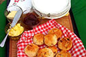

Trip Overview
To witness the picturesque countryside hamlets, magnificent snow-capped peaks, and traditional mountain hospitality of the lesser-travelled Kumaon Himalayas, India Untravelled invites you on an unforgettable journey in the northern state of Uttarakhand.
Fascinate yourself with the old-world charm of heritage homestays, mingle with a local village family in their charming mountain home, indulge in mountain recipes that have stood the test of time, volunteer at a local village initiative, stroll through the charming terraced valleys, and experience life in the Himalayas, far from the influences of tourism.
The Secrets of the Kumaon Himalayas trail starts at a 19th century heritage homestay in the tranquil lake district of Bhimtal. You continue into the heart of Kumaon, to stay in a charming mountain village near the Binsar Wildlife Sanctuary. And your trip ends at the colonial Dak Bungalow in the terraced valleys of Peora.
The heritage homestays in Bhimtal and Peora are steeped in fascinating history and offer the warm hospitality of urban families, while the village homestay near Binsar gives you a chance to sample traditional Kumaoni life, without sacrificing urban comforts. Come, experience the charm of living in the mighty Himalayas!
Please email us at untravel@indiauntravelled.com to plan and book your travels.
Trip Highlights
Pristine lakes of Sattal: Hike through the forests of Bhimtal, to take a dip in one of Sattal’s hidden lakes on a warm summer afternoon.
Colonial royalty: Lose yourself in the timewarp of the colonial homestays in Bhimtal and Peora, as you discover the fascinating history that is still alive in these homes.
Tea picking: Join the tea pickers as they nimbly pick tea from the Orange Pekoe tea bushes, planted by the British in the 1850s.
Traditional village homestay: Immerse yourself in the village culture and hospitality of Kumaon, while staying with a village family in their traditional mountain home.
Barbeque under the stars: On a clear Himalayan evening, take your place under the stars for an Anglo-Indian BBQ dinner (a treat even for vegetarians!)
Kumaoni food and cooking: Sample the delicious local cuisine, prepared with natural and organic ingredients, and step into your host’s kitchen for a traditional recipe that has stood the test of time.
Village walks: Stroll along old forests of oak and pine, past terraced valleys and farms of rice and potato, to charming mountain homes and ancient temples, in the stunning backdrop of the mighty Himalayas.
Binsar Wildlife Sanctuary: Track the illusive birds and wildlife of Binsar’s forests on a morning or evening hike to Zero Point, with magnificent views of snowcapped Himalayan peaks.
Please email us at untravel@indiauntravelled.com to plan and book your travels.
Brief Itinerary
The Secrets of the Kumaon Himalayas trail allows you to get away from the chaos and crowds of India, and experience the simple beauty of life in the mountains. This trail can be customized based on your travel days and interests.
Day 1, 2 & 3: Homestay in a 19th century colonial bungalow in Bhimtal
The Secrets of the Kumaon Himalayas experience can start in Delhi, which offers several international and domestic flight connections. From Delhi, you can take the Shatabdi train to Kathgodam, the nearest railway station, and travel 1.5 hours further by car to your first homestay in the lake district of Kumaon.
Once you drive past the initial concrete construction of Nainital’s lesser-known neighbor, the Himalayas unveil a quaint hill station lined by charming mountain homes, surrounded by lush forests, and home to fascinating wildlife and local legends.
Your first homestay – Smetaceks’ Colonial Homestay – is located in the tranquil hills of Bhimtal, where you stay with an Anglo-Indian family, in a charming 19th century colonial bungalow.
Spend your time in Bhimtal discovering the little treasures of the Himalayas. Partake of the indulgent hospitality of your host family, and travel through time to unearth their fascinating family history. Sample delicious home-cooked food prepared with locally grown ingredients, using Anglo recipes that have stood the test of time. Read, write, paint, draw, do the things you love, in the cozy outdoor and indoor hideouts around the house, with the mighty Himalayas forming an inspiring backdrop.
Explore the surrounding forests, lush farms, and quaint villages on foot. Find your way to the pristine lakes of Sattal for a dip in the warm afternoon sun. Pick tea at the Orange Pekoe Tea Bushes planted by the British in the 1850s. Walk to the pretty English church of Bhimtal. Spread out your picnic lunch by the lakes, or warm yourself over a bonfire dinner under the stars. Stroll along picturesque villages in the terraced valleys and stop by for lunch in a village home. Let the Smetacek boys take you on secret trails in these mountains they call home. And begin your love affair with the majestic Himalayas of Kumaon.
Days 4 & 5: Village stay near Binsar Wildlife Sanctuary
After acquainting yourself with life in the lower Kumaon Himalayas, drive up (~3 hours) through old forests of oak, pine and rhododendron, into the heart of rural Kumaon, where your next homestay sits in the picturesque country village of Shaukiyathal.
Your homestay in Shaukiyathal is in a typical mountain home, quaint and colorful, with small windows peeking out at stunning views of the mighty Himalayas. The western bathroom and bathing areas are created separately to cater to urban comforts.
Spend your time in Shaukiyathal rejuvenating in the lap of the mountains, snow-capped in the winter months from October to March. Immerse in the traditional mountain hospitality and culture of Kumaon. Get to know your host village family, who have called this region home for many generations. Sample the sumptuous cuisine of Kumaon, prepared with organic home-grown ingredients.
On a guided walk through the village, witness centuries-old temple and village architecture, walk through forests of cedar and pine, stroll along picturesque terraced valleys and mountain farms, and learn about life in this relatively remote region. Take a half-day trip to the Binsar Wildlife Sanctuary, and hike along the habitat of its illusive animal and bird life, to Zero Point, for an unforgettable view of snow-capped Himalayan peaks (dependent on the weather and the mist).
Day 6, 7 & 8: Homestay at The Dak Bungalow in Peora
Retrace the footsteps of the Raj to the scenic hamlet of Peora, a 2-3 hour drive from Shaukiyathal. In 1905, the British built here a magnificent inspection bungalow on what was then the silk route on the Kathgodam-Almora-Bageshwar bridle road. A hundred years later, Pradeep and Shubha leased out the dilapidated bungalow from the government, and restored it – The Dak Bungalow at Peora – to its original colonial glory.
This is your last homestay on this trail, in the time warp of the lost heritage of the Himalayas – old fireplaces, wooden ceilings and grand verandahs, coupled with homely hospitality and panoramic Himalayan views. Lounge in the outdoors with a book, indulge in lively conversations with your hosts, stop at the village dhaba for a quintessential plate of hot Maggi, or set out on a walk through the surrounding forest to the terraced valleys and village homes of Peora below.
Take a day trip or trek through the mountains to the ancient temple towns of Almora and Mukteshwar. On cold winter nights, warm yourself by the heat of the old fireplace in your cozy room.
Contact us at untravel@indiauntravelled.com to get the detailed itinerary for this trip or to book your dates.
Please email us at untravel@indiauntravelled.com to plan and book your travels.
Costs
Twin sharing: INR 29,000 per person
Solo traveller: INR 42,000 per person
Inclusions:
- 3 nights stay in Bhimtal.
- 2 nights stay in Shaukiyathal.
- 3 nights stay in Peora.
- Breakfast + dinner on all days.
- 1 outdoor barbeque dinner in Bhimtal.
- Lunch on 2 days in Shaukiyathal.
- Car transfers from Kathgodam railway station to Bhimtal, Bhimtal to Shaukiyathal, Shaukiyathal to Peora, Peora to Kathgodam railway station.
- Guided village walk and lunch in a village home in Bhimtal.
- Guided village walk in Shaukiyathal.
- Half day trip to Binsar Wildlife Sanctuary + jungle hike (2-3 hours)
- Taxes where applicable.
Does not include:
- Entry fee at Binsar Wildlife Sanctuary (INR 150 for Indians, INR 600 for foreigners)
- Meals and activities, other than those mentioned.
- Tips, shopping and personal expenses.
- Expenses arising out of unforeseen circumstances.
- Anything not mentioned in the inclusions.
Optional add-ons:
- Guided hike with packed lunch in Bhimtal: INR 500 per person.
- Guided village walk + lunch in village home in Peora: INR 500 per person.
- Stay at a colonial estates within Binsar Wildlife Sanctuary, powered almost entirely by wind energy: INR 10,700 for 2 people; INR 6,000 for solo travellers.
- Guided heritage walk through the ancient town of Almora: INR 1,000 per person (minimum 2 people required).
- Day trip to Jageshwar temples with Kumaoni lunch at village house: INR 1,500 per person (minimum 2 people required).
- 4-5 day walking trail through the villages of Kumaon near Binsar.
*Note:Rates may vary if travel dates fall in peak season.
*Note:Rates will be lower if you opt for bus/train transfers on this itinerary.
Please email us at untravel@indiauntravelled.com to plan and book your travels.
Gallery
Bhimtal
 At dusk
At dusk Overview of the Smetacek's Colonial Retreat
Overview of the Smetacek's Colonial Retreat Pristine lakes of Sattal, a short forest hike away
Pristine lakes of Sattal, a short forest hike away The farms of Bhimtal
The farms of Bhimtal The quaint English church of Bhimtal
The quaint English church of Bhimtal- Freshly baked scones
 Bedrooms retain the mud walls, high ceilings and wooden roofs
Bedrooms retain the mud walls, high ceilings and wooden roofs Spot birds, monkeys, langurs, porcupines, peacocks and deer in the forest
Spot birds, monkeys, langurs, porcupines, peacocks and deer in the forest Attached western style bathrooms
Attached western style bathrooms The mountain homes of Bhimtal
The mountain homes of Bhimtal- Dinner is a hearty affair here


Shaukiyathal (near Binsar Wildlife Sanctuary)
 Ancient Jain temples
Ancient Jain temples- Feasting on simple organic Kumaoni food. Photo by Shikha Tripathi
- Indoor seating at the homestay
- Local food
- Snow-capped peaks. Photo by Shikha Tripathi
- Sunsets in Kumaon
 The village homestay
The village homestay- View of the snow-capped peaks on the drive
- Village walk
- Walking along the forests. Photo by Shikha Tripathi
- Western bathrooms at the homestay


Peora
 Double room
Double room- Peora Dak Bangla entrance
- On the mountain trails. Photo by Nicholas Foo
- Rooms full of character
 Thunder lilies in full bloom
Thunder lilies in full bloom- View of the snow-capped peaks on a clear day. Photo by Nicholas Foo
- Quaint village homes. Photo by Nicholas Foo
- The colonial outlook of the bungalow. Photo by Nicholas Foo
- The neighborhood. Photo by Nicholas Foo
- The valley
- Walk through the forests. Photo by Nicholas Foo


{kind=link}
{kind=link}
{kind=link}
{kind=link}
{kind=link}
{kind=link}
{kind=link}
{kind=link}
{kind=link}
{kind=link}
{kind=link}
{kind=link}
{kind=link}
{kind=link}
{kind=link}
{kind=link}
{kind=link}
{kind=link}
{kind=link}
{kind=link}
Please email us at untravel@indiauntravelled.com to plan and book your travels.
Reviews
“I take this moment to Thank You. Really appreciate the promptness of your communication when we exchanged several mails, how smoothly you did the bookings for me. Everything was hassle free and the stays at both the places were worth remembering.Thanks again.
Hope to travel with you soon.”
~ Prapti Chowdhury, travelled in April 2017.
“ Let me begin by thanking you and the team at india untravelled for organizing the trip and and arranging the logistics . You guys had taken care of all aspects of the trip and it made our trip ever more enjoyable . As far as our experiences at the home stays are concerned , we had a wonderful experience
We enjoyed our stay at the Dak Bungalow . Pradeep and Shobha made us feel at home and we enjoyed their hospitality . The food was good and we especially liked their home made jams . Though we didn't get to see the Nandadevi range due to the weather , the view of the valley from Dak bungalow was spectacular . Binsar trip was a disappointment though . It takes a couple of hours to reach Binsar from Peora and there's not much to see around . You guys could include an alternative to it if possible.
Bhimtal stay was amazing too . Paddy is an excellent hostess and she took care of all our needs .The trek to Panna tal and sattal was the highlight of our trip . Its was nice to trek along an unspoiled route and lakes are really clean and less crowded.
Overall, we had a nice trip . We look forward to doing more trips through india untravelled and will definitely recommend it to others.”
~ Kumar & Swetha, Travelled in June 2016
“We really enjoyed our stay at all the three homestays and we met quiet a few interesting people. All the three homestays were different in their own way and we enjoyed with all the hosts. We will surely recommend the kumaon trail to people who enjoy being surrounded by nature.
Thank you :)”
~ Riddhi Avalani, travelled with family in November 2015.
“A trip to the Kumaon Highlands is an easy, hassle-free and rewarding jaunt from Delhi that can be done comfortably in under a week. The homestay - Smatacek's Colonial Homestay and Dak Bungalow - are the highlights of the experience, with fascinating conversations over delicious meals. The homestays are surrounded by beautiful woodlands and forests, perfect for people who love nature and walking. Uttarakhand is an under-appreciated area, all the better for those who care to go, as it isn't overrun with tourists!”
I had the pleasure of meeting one old gentleman Mathpal Singh who runs a small museum outside of Bhimtal. He runs a museum of hundreds of his own archaeological and artistic works - remarkable!
Just wanted to send my belated thanks to India Untravelled once again. I should be taking 3 or 4 trips to India next year and look forward to another India Untravelled itinerary.
~ Manda Foo, travelled Solo to Kumaon in July 2015
“We did indeed enjoy our time in India. The organisation worked perfectly and we found each place interesting and fun. Our hosts made us very welcome, fed us extremely well and gave good advice on the activities we might enjoy. We, too enjoyed their company.
Our Kuamon hosts were brilliant, though the mattress at Peora was a little hard for our western bodies. Shubha and Pradeep responded promptly and gave us another mattress. Thoroughly enjoyed our time there with many walks through villages and also some shopping with Pradeep. The food here was delicious.
There was also no hot water provided at Deora and we assumed there was none available. However when asked, suggested by the folks at Binsar, it was willingly provided. A most interesting and unique stay. We did feel it was a long way to Binsar to arrive at the wrong time of the day to see any wildlife though the walk was great as was the lunch. Maybe the original village is closer. Again thoroughly enjoyed the food.
Everything about our Bhimtal stay was wonderful. Paddy is such an interesting person and a terrific host. Good conversation, reading, lots of walking and some swimming kept us busy but relaxed.
The food everywhere was fresh and yummy and we had not a hint of tummy trouble.
Overall our trip surpassed expectations and we hope to explore more of India, with your help, in the future. We have already recommended you to our friends.”
~ Judith and Paul, travelled in September 2014.
“I had a great experience with the Kumaon Trail.
I absolutely loved my stay at Bhimtal. Paddy and her family is a wonderful host. I felt that I am staying with my extended family! Paddy served me with absolute love and affection. The food here was to die for. Though I did not go for a village walk and the BBQ dinner could not be arranged because of bad weather, I loved my hiking spree across the lakes and paddy fields of the town. The homestay was absolutely safe for solo travelers and the facilities are great too. The house has an old world charm and the location is very quaint and peaceful. I would absolutely recommend this place to my family and friends and would love to visit again too.
After the initial hiccups at the village, my later stay at the homestay was delightful. The highlight of the stay was the location where the house is situated. The trip to Binsar was good, however due to bad weather I could not explore the forest much. The village walk was fun and I met a lot of village families. Just a suggestion - the place is actually run by a family, which was not around because of ill health of one of their family members. Would be good if in future you can inform the visitor beforehand about such situations as this would not lead to any apprehensions, as the house is at a pretty remote location and might raise doubts for someone who is visiting the first time.”
I loved my experience with Roads Untraveled. Being a solo woman traveler, I was a little apprehensive about staying at a homestay initially, but I must say that it was an absolute delight and would love to travel through you again! ”
~ Reema, travelled solo in July 2014.
To feature your reviews about this trip, please email them to untravel@indiauntravelled.com
Please email us at untravel@indiauntravelled.com to plan and book your travels.
Responsible Travel
How this trip makes a difference:
- The Bhimtal and Peora accommodations on this trail are heritage properties, which have been lovingly restored by the owners with locally sourced materials, avoiding the carbon footprint of building from scratch.
- The village homestay in Shaukiyathal is set up and run by a local village family, in partnership with a local organization that attempts to bring community-based tourism to their postcard village and augment unsteady farming incomes.
- All accommodations on this trail are homestays, giving you a chance to interact closely with the hosts and understand life (and how life has changed) in the region.
- The homestays on this trail are either run by or employ staff from the local village communities to look after travellers, creating an alternate source of income through tourism.
- Host families on this trail are environmentally committed, with measures like organic farming, volunteering, and restoration and conservation efforts in the region.
- All food provided in the homestays is freshly prepared in the host kitchen, using locally grown and locally sourced ingredients.
- The revenues generated from this trip are reinvested in the preservation of the heritage properties and to support community-tourism, as well as to further the cause of responsible travel in India.
How you can make a difference on this trip:
- While staying in the homestays, take the time to interact with your hosts and think of yourself as a guest at a family home. Please don’t expect room service!
- Carry a good water bottle and ask to refill filtered drinking water at the homestays. Refrain from buying numerous plastic mineral water bottles.
- Pack your bags with environmentally friendly things. Carry as little plastic as possible.
- Do not leave behind any non-biodegradable waste. Carry batteries and other toxic waste back to the cities where waste management is in place.
- What you wear has an impact – dress appropriately.
- Respect the local culture and refrain from physical intimacy in public places.
- Try local food as much as possible and avoid packaged food. Ask for modifications in the food according to your taste, instead of wasting it.
- Avoid excessive consumption of alcohol and refrain from drugs, especially in public places.
- Seek permission before photographing people, so their privacy is respected.
- Do not pluck any medicinal plants & flowers, and do not disturb the wildlife.
Please email us at untravel@indiauntravelled.com to plan and book your travels.
Please email us at untravel@indiauntravelled.com to plan and book your travels.